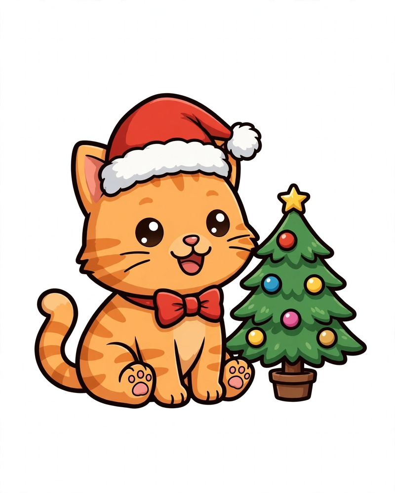

Kaos POD-10 · Oyen Natal
Christmas Oyen in a Santa hat. Oyen Natal shows Oyen in a Christmas edition with a Santa hat. For the festive season. Wear it to Christmas dinners, gift exchanges, and festive family photos — merry all season long.
$14.99harga final di Zazzle